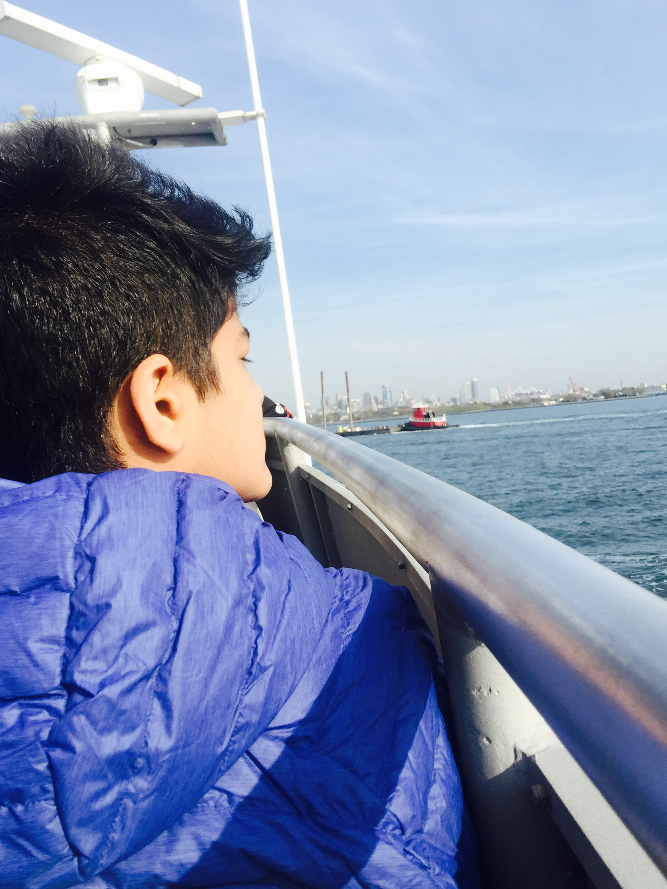

Purble place was my first foray into a world outside of my 5 year old material world. It was like Club Penguin but older. You could go to disco parties as your character, bake cakes, buy outfits at a mall, and other exciting things. To me, it was the place to be.

I found my own way to the internet through games like Minecraft, Angry Birds and Subway Surfers and even before that, on my Nintendo DSi. I was big on iPad games and since I was only allowed the iPad for 48 hours on the weekends, I’d always try to maximize my time on it and eventually got quite comfortable with the web and everything technology.

Youtube was also a big part of my online experience growing up with creators like Ryan Higa, KSI, Markiplier, Superwoman (Lily Singh) and Jenna Marbles.

Googling myself was bound to happen and when it did, it was quite humbling to my 8 year old brain.

I was “allowed” to be on Instagram after I turned 11, and other apps like Snapchat, Facebook (or ‘FB’ as it was called by the cool kids) and Vine slingshotted me into viewing the Internet as a resource and place than this magical higher power to be intimidated by.
